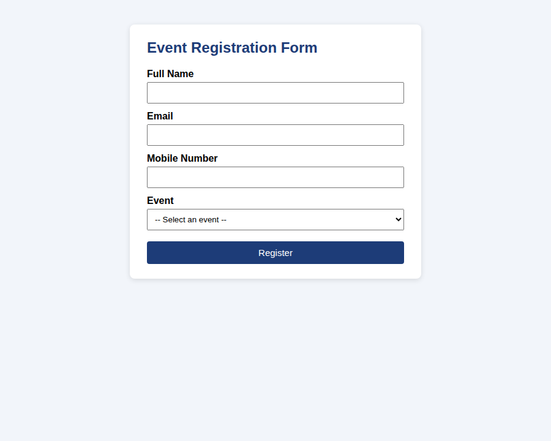
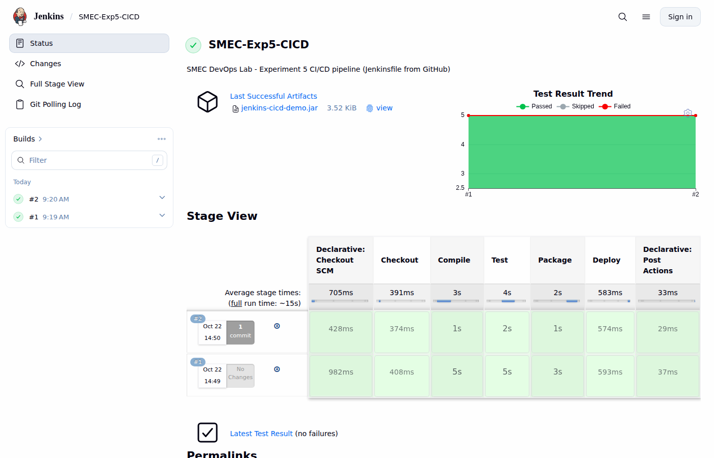
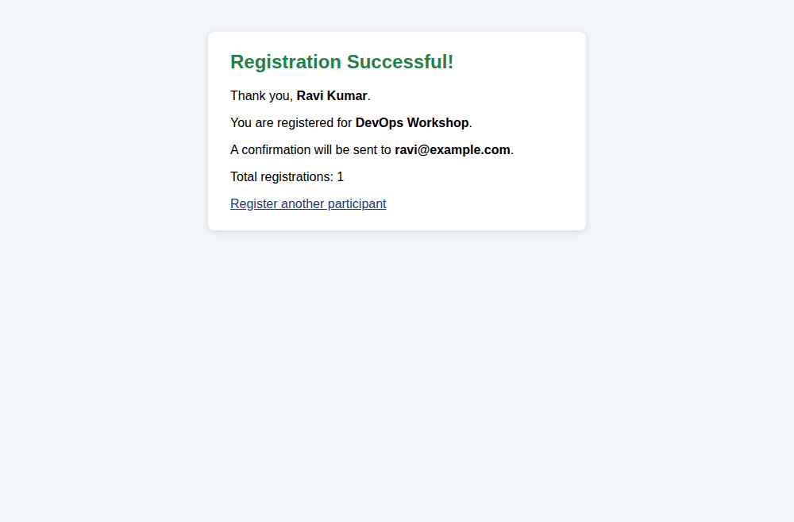

Experiments
Event Registration Form - Flask + Docker
Flask web form with server-side validation, packaged with a Dockerfile and run as a container on port 5000.
Git & GitHub Commands
init, status, add, commit, log, branch, switch, merge, push, clone and a merged GitHub pull request.
Source Code Management
Experiment 1 code managed with feature branches, merge, release tag v1.0 and a central repository.
Jenkins Installation & Setup
Jenkins LTS started on port 8080, dashboard, plugins and executors verified.
CI/CD with Jenkins
Pipeline from Jenkinsfile: checkout, compile, JUnit tests, JAR, deploy. A new commit triggered build #2 automatically.

Docker Commands
pull, images, run, ps, logs, exec, inspect, stop, start, rm, tag, push (GitHub Container Registry).
Containerised Hello World
hello.py packaged in a Docker image; output verified with docker logs.
Docker + Kubernetes
Image loaded into a Kubernetes cluster, Deployment + NodePort Service, scaling to 4 and a rolling update with rollback.
Kubernetes Automation
Experiment 7 app deployed with deployment.yaml/service.yaml, 3 ready replicas, load balancing and self-healing.
Selenium Setup
Java + Selenium WebDriver launches Chrome, opens a web page and reads its title.
JavaScript Program + Selenium
Increment counter app tested by Selenium: 0 → 1 after one click (5/5 tests passed).
Selenium Tests for the Container App
7 Selenium test cases for page loading and form submission against the Flask app running in Docker.

Execution screenshots


